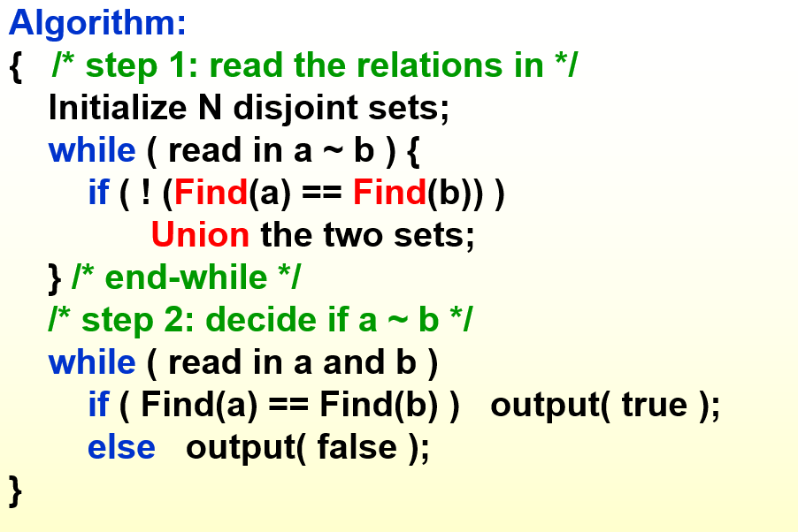
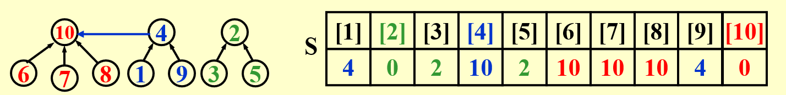
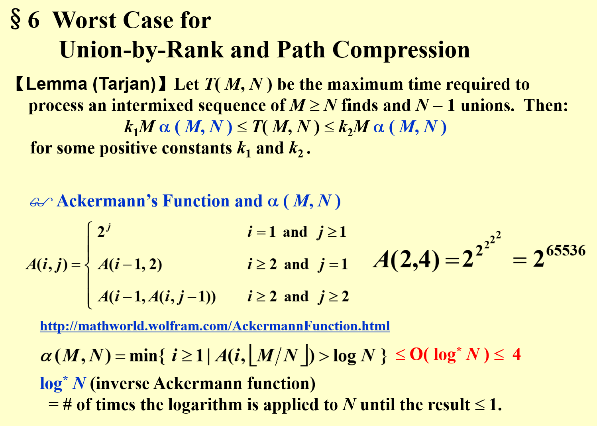
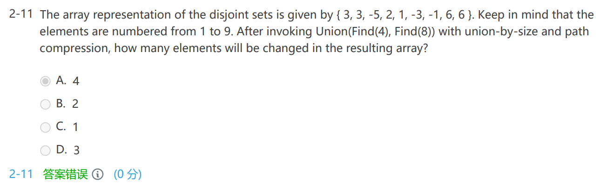

Ch.08 The Disjoint Set ADT
Equivalence Relations¶
约 680 个字 • 14 行代码 预计阅读时间 2 分钟
Definition¶
- R: 相关关系
- ~: 等价关系，两个元素之间的等价
- 等价类：具有等价关系传递成的一个子集
The Dynamic Equivalence Problem¶
Linear solution¶
- 数组或链表都可以
- 伪代码 union and find

- 读取所有等价规则 a~b on-line
- 如果 ab 不在一个 class 里
- 合并 class
- 如果 ab 不在一个 class 里
- 解决输入的查找请求
- 读取所有等价规则 a~b on-line
- \(O(N)\) 如果不考虑查找的时间
Tree solution (forest)¶
- 构建树指针指向根，方便找到组长
Basic Data Structure¶

Union(i, j)¶
- 将两个等价类 \(S_i, S_j\) 合并
- 只需要将一棵树的根节点指向另一棵树的根节点即可
Implementation 1¶
- 使用数组来组织森林
- 合并数组即可
- 太慢了，数组操作麻烦
Implementation 2¶
- 数组表示
S[element] = the element's parent，每个 index 对应的 value 是父母的值，根节点 value 为 -1- 事实上，对于从 1 到 N 命名的元素，元素就是下标
- 合并的时候，只需要将一个集合的根节点的值写成另一个集合的根节点
Find(i)¶
Find(i)，找到元素 i 所在的等价类
Implementation 1¶
- 顺着树找到根节点，根节点找到 S 下标
Implementation 2¶
Analysis¶
比较难分析时间复杂度¶
Worst case¶
1=2 2=3 3=4 4=5......
- 每一次都要 find(1)
- 构成了一个 skewed tree
- \(\Theta(N^2)\)
Smart Union Algorithms¶
Union by size - Always change the smaller tree¶
- 如何标记一个树的大小？
S[Root] = -size - Let T be a tree created by union-by-size with N nodes, then
- \(height(T) \le \lfloor \log_2N\rfloor +1\)
- proof: Each element can have its set name changed at most \(\log_2N\) times
- \(O(N+M\log_2N)\)
- N 个 union
- M 次查找
Union by height¶
- 总是把矮的树指向高的树
- 同样使用
S[Root] = -height来表示高度
Path Compression 路径压缩¶
- 所有的 member 都直接和组长联系，只有两层
- 在查找的同时指向 root
SetType Find (int X, int* S)
{
if(S[X] <= 0) return X; // this is root
else return S[X] = Find(S[X], S); // function "Find" will return the root, and set the parent of this element directly to root
}
- Path compression 和 union-by-height 不可以同时使用
- 如果 find 多的话，就可以使用 path compression，减少之后的 find 的时间复杂度
Worst case for Union-by-Rank and Path Compression¶
Lemma(Tarjan)¶
- M find, N-1 unions
- \(k_1M\alpha(M,N)\le T(M,N) \le k_2M\alpha (M,N)\)
- \(\alpha\) 和阿克曼函数
- 阿克曼函数的增长速度很快
- \(\alpha(M,N) = min\{i\ge1|A(i,\lfloor M/N\rfloor)>\log N\}\le O(\log^*N)\le 4\)
- \(\log^*N\) = # of timse the logarithm is applied to N until the result \(\le 1\)

Exercises¶
HW 7¶
- Let T be a tree created by union-by-size with N nodes, then the height of T can be .
- \(\le \log_2N+1\)
- 不会推，记忆
Midterm¶
- If a tree is created by union-by-size with n nodes, then each element can have its set name changed at most \(\log n\) times. T
- 这里没有底数也认为是正确的，不是很理解
Review¶

- 注意 path compression 是在 find 函数中执行的，一个 find 会将本次路径上的所有点都直接指向组长